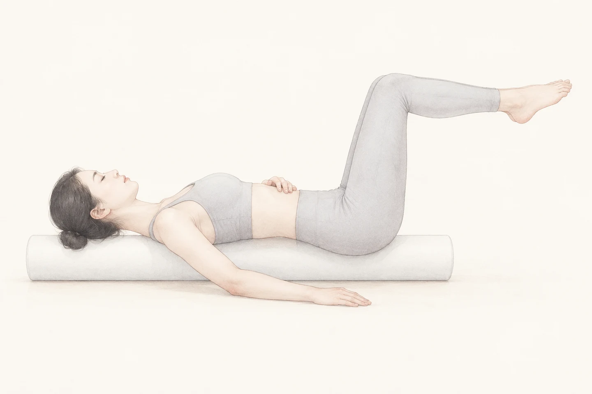
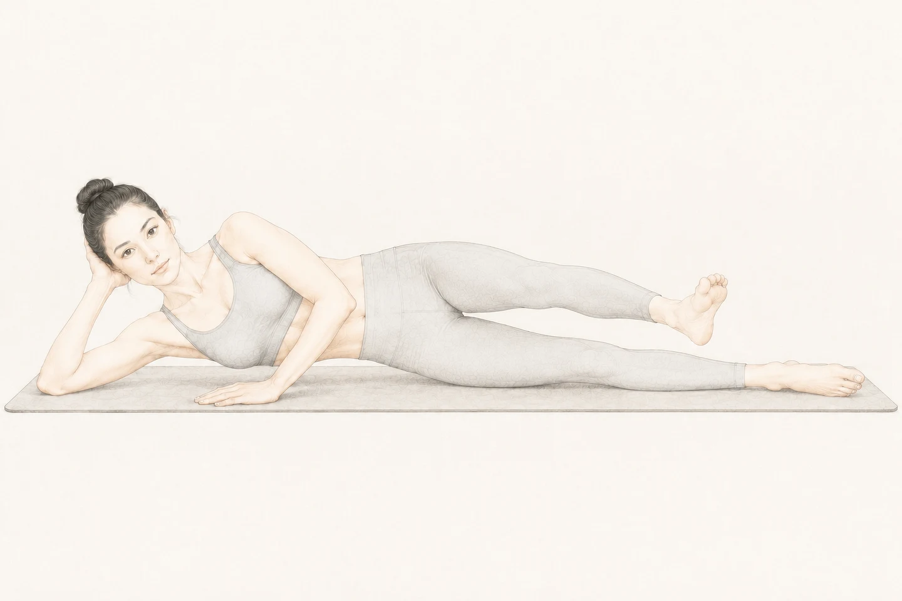

一、躺上泡沫轴，肚子先鼓起来
躺在一根泡沫轴上，整条后背压着它，两只手贴地。屈膝，把一条腿抬成桌面，再抬另一条。轴开始晃，你整个人绷住。老师说，现在深层核心被激活了。
我刷到过一个示范。老师很瘦，两条腿一上去，她肚子正中间那条腹直肌就顶了起来。瘦有一个好处，身体在干什么藏不住。换一个皮下有点脂肪的学员，同一件事照样发生，只是没人看得见。
先把话说在前面。泡沫轴有两种用法。一种是滚，松解筋膜，那是老师的工具，这篇不碰。这篇只说另一种：躺上去、站上去，用它制造不稳定，说这样能激活深层核心。它火得很，我不是来说它没用。我想拆的是，它激活的到底是哪一层，以及古典普拉提为什么不这么练。

二、「激活」是真的，亮的是哪一层
先给它该得的：不稳定平面确实让躯干肌肉更亮。二〇二四年一篇汇总了八十六项研究、一千七百多人的综述，测的是肌电，就是肌肉用力时发出的电信号。结论很清楚，站在或躺在不稳定的东西上，躯干肌肉的肌电普遍上升，下肢的反而没有。
再看涨的是谁。涨最多的是腹内斜肌，其次腹直肌和腹外斜肌，竖脊肌和多裂肌只涨了一点。而大家嘴里那块「深层核心」腹横肌，藏在腹内斜肌下面，皮肤上贴的电极分不清它和上面那层。换句话说，研究量到的是贴得到的那几块。最深的那块，没人量到；量到的里面，涨得最少的恰恰是贴着脊柱的多裂肌。
那条顶起来的腹直肌就在这个账上。它是最表层、最大块、最先被看见的那块，也是晃的时候最先被叫上来的那块。
三、亮了，不等于练到
肌肉亮，和动作练到，是两件事。
一组加拿大研究者让人在长凳和瑞士球上分别做卧推，球上的最大力比长凳上低了将近六成，肌电却没有差别。坐在球上伸膝，力掉了七成，刹车的肌肉和发力的肌肉一起用力的比例反而升了。站在充气球上做原地不动的深蹲，峰值力掉四成半，发力的速度也掉四成。
翻译成体感：肌肉确实在亮，但亮出来的那部分力，没有用在动作上，用在了别摔倒上。你绷得很紧，紧的是全身一起刹车。一份运动科学学会的立场文件说得很直白，不稳定平面能提高软组织的感觉效率、降低腰痛发生率，但「不推荐作为力量、肥大或功率的主要训练方式，尤其对受过训练的人」。
把这两节合起来读。泡沫轴上躯干肌电涨，我的读法是躯干在刹车；刹车先叫最表层最大块的肌肉，所以腹直肌先鼓。你要平衡、要康复、要让一个久坐的身体重新感觉到自己，它有用。你要的是深层那一块学会在动作里干活，刹车练不出这个。
四、古典不晃你，是因为稳要从里面长出来
古典普拉提也练稳。只是它把扰动源放在了身体里，不放在脚下。
Side Kick 的时候，那条前后踢的腿就是扰动。它在把你的躯干往前拽、往后拽，你练的内容是躯干拒绝被带走。One Leg Circle 画圈的那条腿也是，Davidson 在我采访他的时候说，这个动作同时在考髋的稳定和髋的活动度。他有一句话我记到现在：
"Stable doesn't mean still. It means controlled — the ability to respond to a disturbing force by maintaining, or returning to, the original position."
稳不等于不动。稳是受控：被扰动了，守得住原位，或者回得去。
这两种扰动有一个根本差别。腿带来的扰动，只在你注意力在场的时候才存在。你不专注，它就只是踢腿，动作空转。脚下的晃不需要你注意，它自己就晃。前一种练的是觉察，后一种练的是反应。反应很快，但它粗，顾不上细节。
弹簧在这件事里的角色也很清楚。Joe 一九三四年给稳踏椅申请的专利里，有一句写得很怪的话：踏板的弹簧「不负责把座面送回原位」。它只抵抗你往下压。换句话说，弹簧告诉你你在哪、用了多少力，但它不替你做，也不推你。我自己的体会是，普拉提把动作的质感交给了弹簧，你只需要管 powerhouse。弹簧是反馈，不是扰动。我一度把弹簧想成一根诚实的尺子，这只是比喻，但方向对：它量你，不考你。
这跟稳踏椅那篇是同一件事的两面。古典的基本款什么都不替你托，也什么都不晃你。它把两头都撤掉，中间剩下的就是你。

五、为什么它火
因为它当场结算。
晃着练的时候，吓一跳那套反应会把全身注意力拉回来，你立刻在场。这是真的，不是假的。问题是它拉回来的注意力规格不对：窄、粗、朝外，盯着别摔。觉察需要的是宽的、细的、朝内的注意力。这两种注意力互相挤占。你越怕，越感觉不到后腰有没有长。
于是紧张被当成了练到。练完说不出练到了哪，正是因为练到的是紧张本身。
还有一层是顺序。我观察下来，多数练普拉提的人，连有支撑地把一个动作练到 powerhouse 都很难，更不要说在晃动里保持它。在没有支撑的身体上加扰动，身体会抓最近的东西稳住自己：脚踝、脖子、咬紧的牙。重弹簧不挑肌肉，它放大你已经有的那条代偿。晃动也一样。
「融合一下」当然可以。但融的是两个目标，一个要平衡，一个要控制，而且有先后。先有支撑，再谈扰动，古典把这个顺序写在动作表里了。
还有一层在课堂外。晃着练离不开小器械：波速球、瑜伽球、泡沫轴，几十块到几百块一件，摆进课堂就是一门新课，带回家又是一单。器械便宜，课不便宜，还好拍视频，标题再配上平坦小腹、收腰、十分钟，这几件事凑在一起，它火起来几乎是必然的。我没有说推荐它的人都在卖东西。只是你刷到的推荐里，有多少在讲动作本身的证据，有多少在讲器械的生意，值得分开数一数。古典的器械不好卖：大、贵、买一次用很多年，没有人靠它年年上新。
顺带一段历史。泡沫轴最早不是用来滚的。一九七〇年代，费登奎斯方法的创始人在美国看到包装用的泡沫圆柱，拿进课堂，让人躺在上面找平衡和觉察。拿它滚着松解，是一九八七年一位给百老汇舞者做康复的物理治疗师想出来的。这位治疗师后来还干过一件更大的事：把 Pilates 这个词注册成了自己的商标，给同行发了好些年律师函，二〇〇〇年被法院判了一句「通用名，不能注册」。今天满屏的泡沫轴普拉提课，轴是他教人滚的，名字是他输掉的。
这把尺也请拿来量我。这篇文章同样在卖一样东西，一种练法。所以我给的每个数字都放在上面，能回查。
六、下次躺上去，先把手放肚子上
晃着练不是错，它只是另一门课。进那门课之前，先做一件事：一只手平放在肚子正中间，再抬腿。
手下面是往上顶，还是平着、甚至往里收？
下来之后，你能说出哪里被拉长了吗？
手下面平着、也说得出，晃是在考你已经有的东西。手被顶起来、说不出，晃只是在借紧张冒充稳。
稳是结果，鼓是抢戏。
下次躺上泡沫轴，先把手放在肚子上，再抬腿。